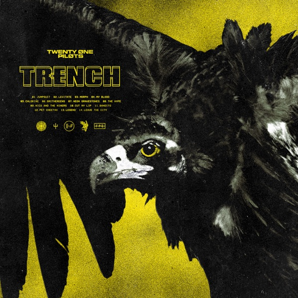

Trench вышел 5 октября 2018 года. В альбоме 14 композиций, а его общая продолжительность составляет около 56 минут.
На этой записи twenty one pilots соединяют рок, хип-хоп, электронные ритмы и мелодичные вокальные партии. Бас и барабаны создают основу многих песен, а синтезаторы и многослойный вокал добавляют глубину.
Сюжетная сторона Trench связана с вымышленным городом Дема и бандитос. Эту историю можно воспринимать как самостоятельный фантастический мир и как способ говорить о тревоге, давлении и стремлении к свободе.
При этом знакомство с сюжетом не обязательно для прослушивания. Песни работают и как личные истории о страхе, верности, творчестве и поддержке близких.
Jumpsuit открывает альбом тяжёлым басовым рисунком, а Levitate продолжает движение быстрым речитативом. В My Blood заметны мелодичный бас и вокальные гармонии. Chlorine строится на контрасте ритмической части и протяжённого завершения.
Заключительная Leave the City звучит сдержаннее и оставляет пространство для голоса и клавишных. Благодаря такому переходу альбом воспринимается как движение от напряжения к более тихому размышлению.
В каталоге также представлены Vessel, Blurryface, Scaled And Icy, Clancy и Breach. Их можно найти в общей таблице.
Выполнил: Иван Копылов. Группа: Б9124-09.03.04.